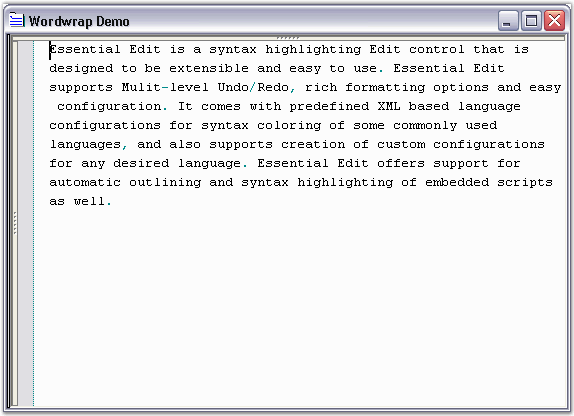

Wordwrap allows users to view the entire contents of a line, by wrapping text at the edge of the control (or text area) into one or more lines, that normally would have been outside the view in the Edit Control.
Edit Control allows advanced customization by using the Wordwrap functionality.
Type of Wordwrap
Wordwrap is enabled by setting the WordWrap property of the Edit Control to True. The two types of Wordwrap in Edit Control have been explained below.
|
Edit Control Property |
Description |
|
WordWrap |
Gets / sets state of the word wrapping mode. |
|
WordWrapType |
Gets / sets type of word wrapping. The options provided are
· WrapByChar - wraps the text by individual characters · WrapByWord - wraps the text by individual words
The default value is WrapByWord. |
|
[C#]
// WordWrap property set. this.editControl1.WordWrap = true;
// WordWrapType property set. this.editControl1.WordWrapType = Syncfusion.Windows.Forms.Edit.Enums.WordWrapType.WrapByChar; |
|
[VB.NET]
' WordWrap property set. Me.editControl1.WordWrap = True
' WordWrapType property set. Me.editControl1.WordWrapType = Syncfusion.Windows.Forms.Edit.Enums.WordWrapType.WrapByChar |
Wordwrap Mode
The following properties are associated with setting the mode of Word Wrapping.
|
Edit Control Property |
Description |
|
WordWrapMode |
Gets / sets state of the word wrapping mode. The options provided are
WordWrapMargin - wraps text at the boundary between text area and wordwrap margin of the Edit Control The area beyond the text area in the Edit Control is referred to as the wordwrap margin. Hence, the width of the wordwrap margin is the difference between Edit Control's width and the TextArea width. Control - wraps the text at the edge of the Edit Control SpecifiedColumn - wraps the text at the specified column that is specified in WordWrapColumn property
The default value is set to Control. |
|
WordWrapColumnMeasuringFont |
Gets / sets the font used while calculating the position of WordWrapColumn. |
|
WordWrapColumn |
Specifies column for wrapping text. Used when WordWrapMode is set to SpecifiedColumn.
The default value is 100. |
|
TextAreaWidth |
Gets / sets the width of the text area of the Edit Control.
The default value is 600. |
|
WrappedLinesOffset |
Specifies offset of wrapped lines. |
|
[C#]
// Sets the WordWrap mode. this.editControl1.WordWrapMode = Syncfusion.Windows.Forms.Edit.Enums.WordWrapMode.WordWrapMargin;
// Sets font that is used while calculating the position of the WordWrap column. this.editControl1.WordWrapColumnMeasuringFont = new System.Drawing.Font("Arial", 9.75F, System.Drawing.FontStyle.Regular, System.Drawing.GraphicsUnit.Point, ((byte)(0)));
// Specifies column for wrapping text. this.editControl1.WordWrapColumn = 125;
// Set the width of the EditControl's text area. this.editControl1.TextAreaWidth = 300;
// Specifies offset for the wrapped lines. this.editControl1.WrappedLinesOffset = 10; |
|
[VB.NET]
' Sets the WordWrap mode. Me.editControl1.WordWrapMode = Syncfusion.Windows.Forms.Edit.Enums.WordWrapMode.WordWrapMargin
' Sets font that is used while calculating the position of the WordWrap column. Me.editControl1.WordWrapColumnMeasuringFont = New System.Drawing.Font("Arial", 9.75F, System.Drawing.FontStyle.Regular, System.Drawing.GraphicsUnit.Point, (CType((0), Byte)))
' Specifies column for wrapping text. Me.editControl1.WordWrapColumn = 125
' Set the width of the EditControl's text area. Me.editControl1.TextAreaWidth = 300
' Specifies offset for the wrapped lines. Me.editControl1.WrappedLinesOffset = 10 |
The following illustration shows the Edit Control with the WordWrappingMode and WordWrapType properties set.

Figure 36: WordWrappingMode = "Control"; WordWrapType= "WrapByWord"
Refer to the WordWrap Demo sample in the following sample installation location.
..\My Documents\Syncfusion\EssentialStudio\Version Number\Windows\Edit.Windows\Samples\2.0\Text Formatting\WordwrapDemo
 Wordwrap Margin Customization and Wrapping
Images
Wordwrap Margin Customization and Wrapping
Images